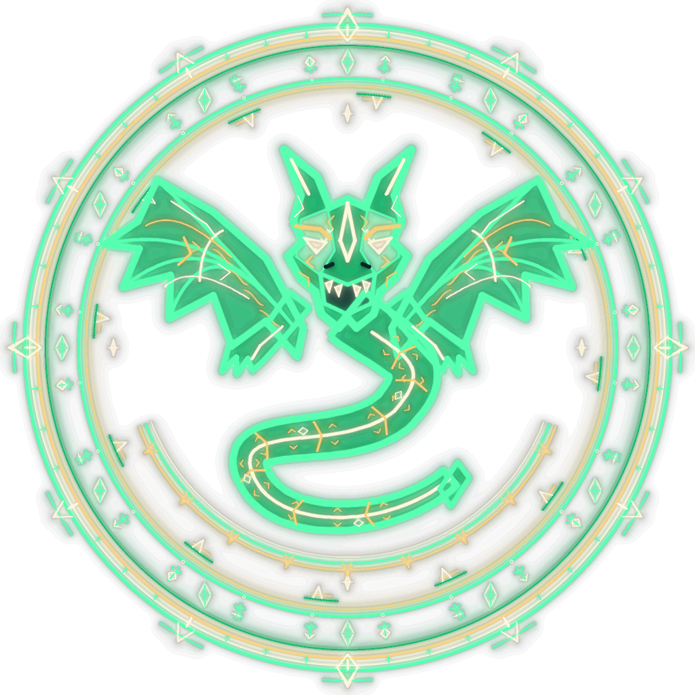
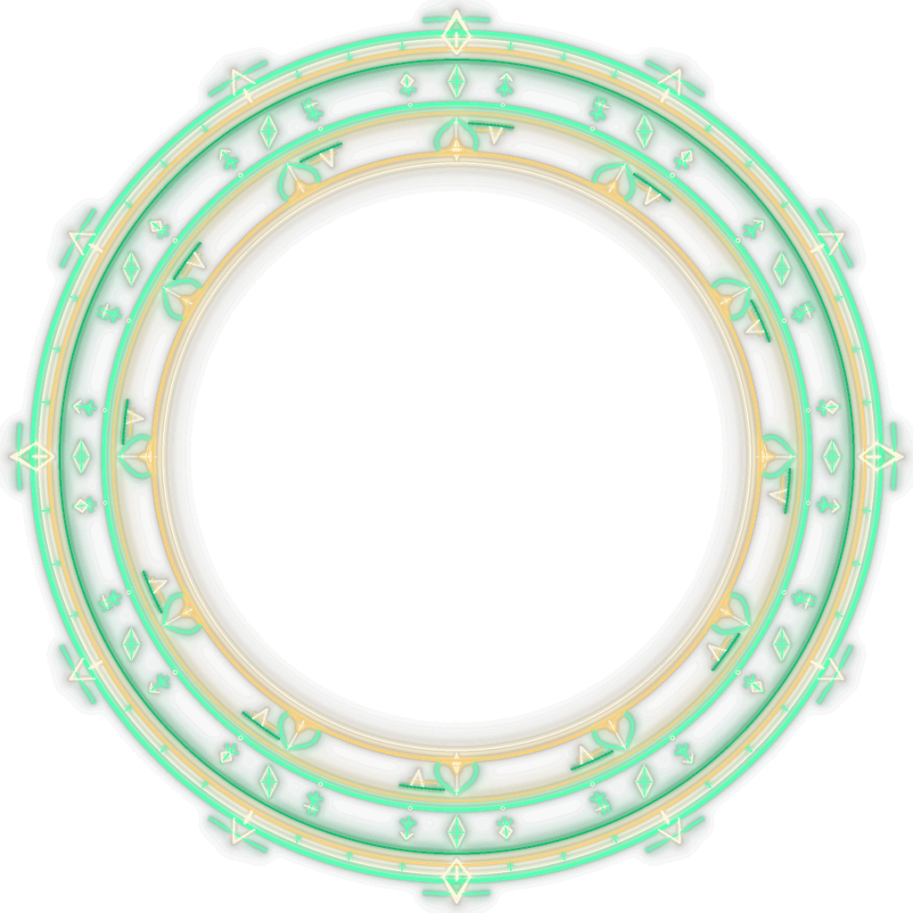

VERDANT / DRAGON SEAL + FORWARD BEAM


Engraved dragon seal behind the caster, framed by an independently moving royal gate. The forward beam has a narrow hot axis and transparent green shoulders; its far end radiates light. No crown occupies the caster's view.